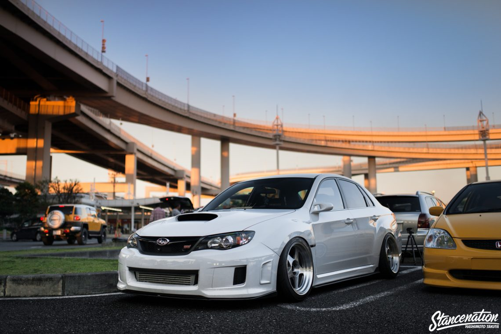

SUBARU IMPREZA

Subaru Impreza adalah mobil kompak berkarakter sport yang diproduksi oleh Subaru dari perusahaan Fuji Heavy Industries (FHI), Jepang. Impreza pertama kali diluncurkan di Jepang pada akhir tahun 1992, dan mulai masuk pasar ekspor pada tahun 1993. Semua Impreza menggunakan mesin 4 silinder dengan konfigurasi Boxer. Pada umumnya Impreza berpenggerak 4WD Symmetrical All Wheel Drive, meskipun ada versi yang lebih murah dengan penggerak roda depan.
Subaru Impreza yang berkemampuan tinggi adalah WRX yang sangat popular di arena kejuaraan rally dunia / World Rally Championship (WRC). Dengan warna biru yang khas, Impreza untuk WRC dipersiapkan oleh Subaru Technica International (STI) bersama Prodrive dari Inggris. Secara resmi Subaru Impreza ikut WRC dari tahun 1993 sampai 2008.